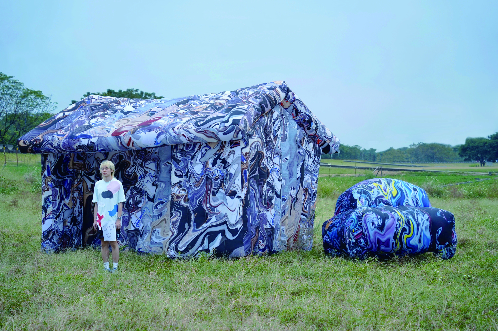

装置
I Think Therefore I Am / 我思故我在
現実と存在は流動的で多次元的であり、人間の思考の投影と現実の物体は常に重ね合わされ、再構築される。"リアル"とは物理的な実体だけでなく、仮想世界のデジタル存在や個人の記憶に残る映像も含まれます。そして「存在」は、物質から思考まで、過去から未来まで、すべてをカバーする。
私は創作者として観察者役割を果たし、私が制作したインスタレーションを観察する。現実のモデルにある家や車を、行動パフォーマンスを通じて装置とインタラクションし再構築します。それによって、現実と存在の間にあるオープンな疑問を観客に投げかけます。
古いSF映画を見るたびに、私は人々の未来への期待を嘆かずにはいられない。彼らが想像した未来は私の今であり、しかし、今はまだSFの中の未来になっていない。いくつかのSF映画は、むしろ並行宇宙の未来を構築したかのようです。
それらはすべて、当時の人々が理性と感性をもとに描き出した未来の姿の結果です。それは人々の理性的な論理と自らの感情の結果であり、現在の未来判断に基づく思考と現実を重ね合わせた未来を構築することから生まれる現実なのだ。
上下スクロールで移動

空間の電子化と時代の技術発展の趨勢を分析し、情報技術の急速な発展、オートメーション化と電化された未来の姿が映画に表現されていることを確認した。
SFが現実になると、映画の美しさと現実には一定の差がある。日本の技術停滞と技術不安が映画に表現されている。
多くのSF映画に登場するアイテムは日常生活に由来しており、その中でも最も一般的で注目される道具の一つが車です。
記憶と現実の間で、私はこのすでに存在しない建物を再構築し、存在しない存在を作り上げる。しかし、もし意識が現実を再構築できるなら、私は一体何なのでしょうか？
3Dモデリングを用いて、インスタレーション全体の空間構成をシミュレーション。気球で再構築された家と車の配置、観客との距離関係、およびパフォーマンス動線を検証した。
日常的な物体（家・車）を気球の形態で再構築。画像のコラージュ技法を用いて、記憶と現実の断片を気球表面に重ね合わせ、存在の多層性を物質化した。
鑑賞者の視線と認知によって、私の存在は新たな意味を付与される。インスタレーションの中で、私は観察される対象であると同時に、観察する主体でもある。
風船を刺し破る行為は、存在と現実の多重性の矛盾を明らかにする。思考の投射による私を刺し破ることで、多重現実の本質が虚構であることを示しています。
私は二元論の対立と解消を疑問視し、純粋な存在への回帰、または認知のリアリティを放棄する問題を反省しようとしています。このすべてを凧にして、風に乗せて飛ばしてしまおう。